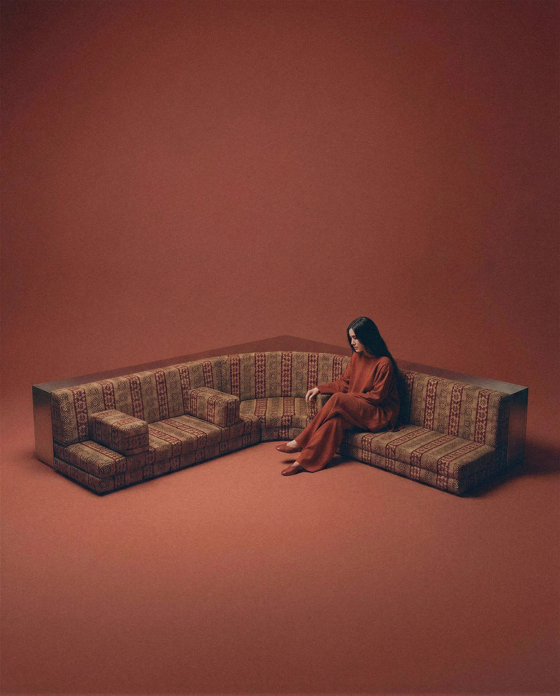
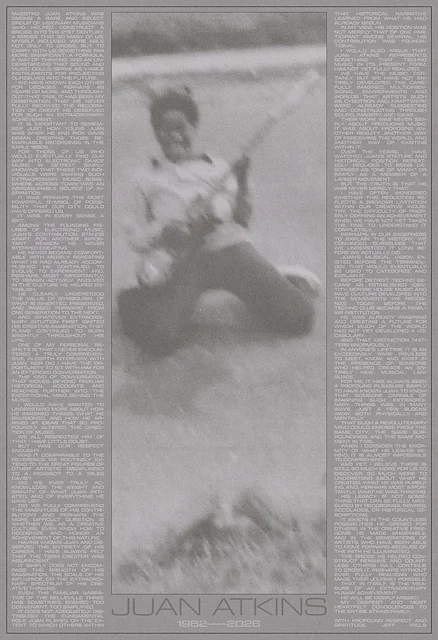
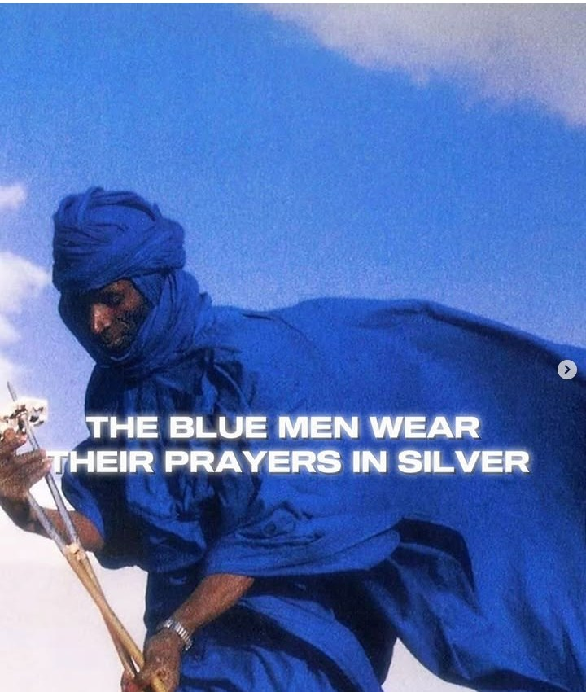
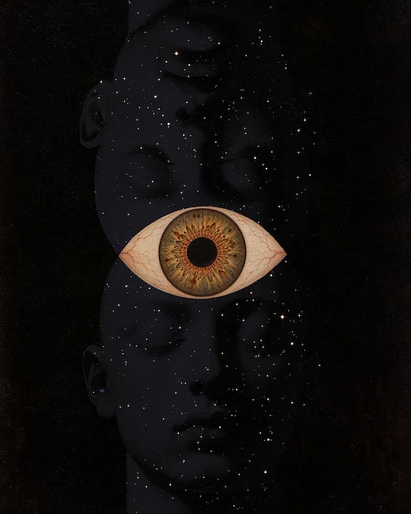
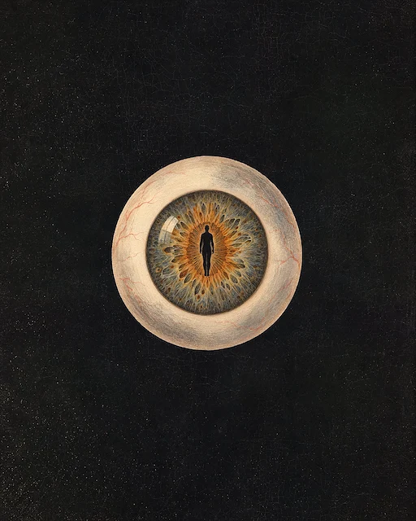
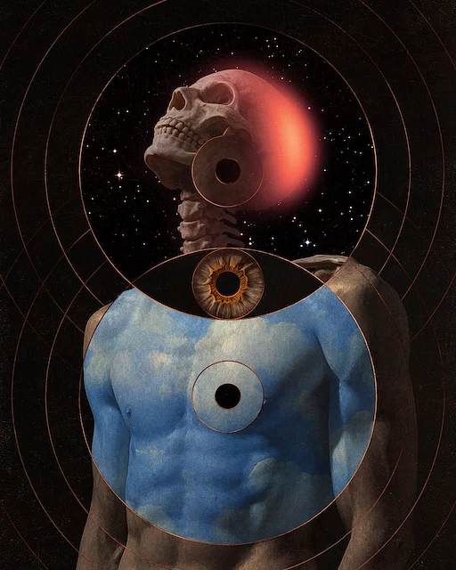
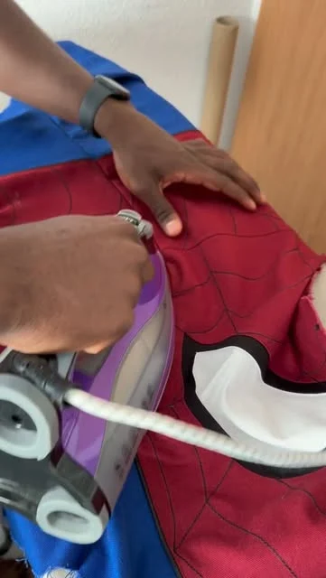
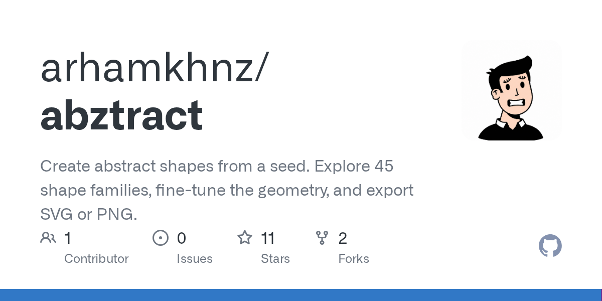
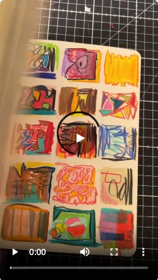
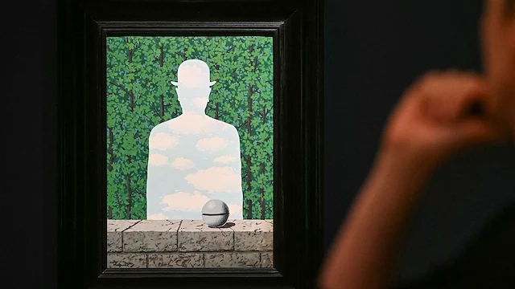

Pilot Issue No. 1 · Week of October 30 – November 5, 2026 · From your MyMind saves
One Piece of MyMind
One week of your saves, arranged into five picture themes and five reading stories. Nothing repeats, and nothing is here by accident.
Pictures · one · 5 pictures
The body on stage
Brass players in white on the Guggenheim ramps, part of a Solange performance piece. A dancer in a sculptural gown, sepia and mid-spin. A photo series of musicians and dancers in tailored suits. The fifth reaches back to September and asks how you photograph jazz at all. The camera waits for the exact moment performance peaks, and the clothing does half of the storytelling.
Brass Musicians on Curved White RampsMusicians in white and brown outfits play brass instruments along the spiraling white ramps of a museum atrium.x.com
Black and White Portraits of Style, Music, and IdentityA series of nine black-and-white photographs showing Black models in tailored suits, ties, and berets, set against concrete walls, corrugated metal, and dim crowded interiors. The images use mirrors, reflections, motion…instagram.com
How Do You Photograph Jazz?Saved 2026-09-24. A striking series of photographs exploring the visual essence of jazz music through a saxophonist. The collection blends sharp, moody studio portraits with intentional motion blur and long-exposure techniques, capturing… Found by same-vibe from this week.x.com
Photography by Travys OwenSaved 2026-08-29. A striking series of artistic photographs by Travys Owen showcasing the human body in motion and form. The collection includes a black-and-white close-up of a muscular back with expressive hands, a monochrome… Found by same-vibe from this week.x.com
Crumpled chrome stools, a gown that holds its own shape around a spinning dancer, a portrait swallowed by pleats, and a brick house with circular arches. Furniture, clothing, and buildings all trying to be sculpture. One summer save joins them and makes the point that this is a long-running interest of yours: a sofa built from one soft block.
Polished Chrome Sculptural Furniture SetMirror-polished stainless steel stools and tables with crumpled, cube-like forms in a warm-lit studio setting.yankodesign.com
Dancer in Sculptural Woven GownSepia-toned photo of a bald dancer mid-spin in a wide, lattice-textured white garment against a dark backdrop.x.com
Brutalism Meets Brick: An Indian Residence with Circular ArchesThe post opens with the question of what happens when brutalism is brought to India, then answers it with a photo series of a residence that combines exposed red brick with raw concrete. Circular and arched openings…instagram.com

SIT-PIT Sofa by ANTWERKSaved 2026-07-04. The SIT-PIT is a modular sectional sofa by ANTWERK that merges upholstered seating with a sculptural metal structure. The design features a curved, patterned fabric bench integrated into an L-shaped brushed metal frame… Found by same-vibe from this week.x.com
Three saves that each removed color on purpose. Ming Smith shoots Black life in black and white because light is the subject. The memorial poster for Juan Atkins went grayscale because grief has no palette. And a deck of cards reduced to pure geometry, no suits, no faces.
Painting Light in Photography by Ming SmithA carousel of black-and-white photographs introduced by a title card crediting photographer Ming Smith. The opening image is a mirror self-portrait of the photographer holding a camera while a child leans against her.…instagram.com

Juan Atkins Memorial Tribute PosterGrayscale memorial poster with a blurred central photo, columns of tribute text, and the name Juan Atkins with dates.pbs.twimg.com
The Tuareg Blue Men wear veils and silver, identity worn as dress. The cosmic eye stacks two faces filled with stars. Two saves from earlier months echo them: an eye inside a pupil, and a skeletal figure drifting through the same night sky. Both hide the face to show the person.

The Blue Men Wear Their Prayers in SilverA photo series showing men in the indigo-dyed robes and turbans (tagelmust) associated with the Tuareg, nicknamed the 'Blue Men' of the Sahara. The opening slide carries the caption 'The Blue Men wear their prayers in…instagram.com

Cosmic Eye Over Dual FacesSurreal artwork of two stacked human faces with closed eyes, filled with stars, and a large golden-brown eye in the center.x.com

Eye with Human Silhouette in PupilSaved 2026-09-27. Surreal painting of a giant eyeball with a human figure standing in the pupil. Found by same-vibe from this week.pbs.twimg.com

Surreal Skeletal Figure with Cosmic ElementsSaved 2026-01-19. A mystical skeleton with circular cosmic elements, eyes, and celestial imagery in space Found by same-vibe from this week.x.com
The reading · five stories
The reading
The written side of the week: the articles and videos, grouped by what they share.
Reading · top story · 8 items
The Real Thing
This week you saved two stories about the same man. Inigo Philbrick is the biggest art fraudster in US history, and one of the pieces published the day he walked out of prison. Around him: Warhol arguing a fake Mona Lisa is as good as the real one, the Getty spending a full year proving which Rubens is real, Michelangelo's technique coming to light through a chapel cleaning, a search engine built on four million real images as a pushback against the flood of AI-generated pictures, and hands re-embroidering a sneaker that was already one of a kind. The week spans four centuries and lands on one argument. When everything can be copied, the real thing gets more expensive, and checking becomes the art form.
Inigo Philbrick: How to sell 200 per cent of a work of art you don’t ownArt collecting often serves as a high-stakes status symbol rather than a private aesthetic pursuit, with wealthy buyers frequently lending their expensive acquisitions to museums for cultural clout. Capitalizing on this…dangerousminds.net
The biggest art fraudster in US HISTORY is out of jailThis video looks at the release from prison of a person described as the biggest art fraudster in United States history. Going by the title, it likely covers how the scheme worked, how long it went undetected in the art…youtube.com
Even Better Than the Real Thing: Why did Andy Warhol approve of fake art?Andy Warhol was a prominent cultural figure who famously argued that replicas of masterpieces were just as valuable as originals. When the Mona Lisa was exhibited at the Metropolitan Museum of Art in 1963, massive…dangerousminds.net
Conserving a Painting from the Workshop of Peter Paul RubensA Getty conservator demonstrates the detailed process of restoring an artwork, specifically working on Four Studies of a Male Head from the workshop of Peter Paul Rubens. The post promotes Ask A Conservator Day,…x.com
Michelangelo’s Technique Revealed by Cleaning of Sistine Chapel FrescoThe recent restoration of Michelangelo’s iconic Sistine Chapel altarpiece, The Last Judgement, has unveiled fascinating new insights into the renowned artist's painting techniques. Following the meticulous removal of…artforum.com
colette's Jordan 1 Gets a Beautiful Sashiko Gal RefreshThe innovative collective known as the Sashiko Gals has breathed new life into an already ultra-rare pair of sneakers by redesigning Sarah Andelman’s colette Air Jordan 1 High. Originally produced in an extremely…highsnobiety.com
Reading · theme one · 10 items
Skill, and the machines that erase it
The week argues with itself about whether skill is worth building. A 400 dollar Casio keyboard that physically cannot play a wrong note. A Japanese bowmaker asking 2,000 dollars for a bamboo longbow, priced by centuries of wrong notes. A comedian drawing one bad horse a day in public until millions follow. A film animated entirely in Excel, made because the pointless impulse to create is holy. A designer hand-sewing a reversible Spider-Man jacket. An essay defending the dilettante in an over-optimized age. Up against all of that sit generative SVG tools, copy-paste React components, and a vector tutorial about making digital art look handmade.
Why the dilettante is the anti-hero of our over-optimised ageIn an era that relentlessly champions hyper-specialisation and deep expertise, the dilettante often serves as a cautionary tale of a lack of commitment. However, thinkers such as J W von Goethe, Friedrich Schiller, and…aeon.co
Japanese Yumi Longbows: Centuries of CraftThe post highlights the yumi, the traditional Japanese longbow, which has been used in Japan for centuries. It notes that a modern handmade bamboo version can cost more than $2,000, pointing to the skill and labor in…x.com
An Animated Film Made in Excel Sums Up the Pointless Impulse to CreateLondon-based creator Maria Tomazou has captured public attention with her latest quirky and inspiring project titled "I made a film in Excel". Despite its seemingly pointless nature, the animated short film demonstrates…thisiscolossal.com

Custom Reversible Spider-Man Jacket CreationA creative designer documents the complete process of sewing a custom reversible Spider-Man jacket. The video details measuring, cutting fabric, detailed machine embroidery, and assembling the garment before modeling…instagram.com
How I Make Vector Art That Doesn't Look Like Vector Art (Adobe Fresco)This tutorial shows how to use Adobe Fresco to create vector artwork that feels organic and hand-made instead of flat and overly clean. Vector illustration is often associated with hard edges, uniform shapes, and a…youtube.com

abztractOpen-source generator for geometric SVG patterns.github.com
Powerful Websites You Should Know: React BitsThis video highlights the website React Bits (reactbits.dev), a collection of free animated components for web developers. It features a wide variety of customizable animations, including text effects, UI components,…instagram.com

Colour Journal Pages ShareThe poster greets followers with a cheerful good morning and shares a few additional pages from their colour journal. The post is a brief, friendly update that continues an ongoing showcase of their creative journaling…threads.com
Reading · theme two · 6 items
Music, 2,800 years apart
A bone flute dug out of Troy, from the layer that overlaps Homer's lifetime. Songs in the Key of Life turns fifty. Juan Atkins built a cybernetic future for Detroit techno and filled it with humanity, and he died at 64, so you saved two memorials. A DC street was renamed for The Jewels, the 1958 girl group from Roosevelt High. The incoming Texas Attorney General used to compose Dragon Ball Z music. And one radio station streams lo-fi beats generated from the digits of pi. Put together, these are instruments as time capsules. The same act, organizing sound, runs from Homeric Troy to pi-generated radio.
A Map for Loving AmericaFifty years after Stevie Wonder released his masterpiece Songs in the Key of Life, the album's powerful message of optimism, resilience, and patriotism remains vital. Emerging during the nation's bicentennial amid…theatlantic.com
D.C. honors pioneering R&B group the Jewels with ‘The Jewels Way’Washington, D.C., is honoring the pioneering R&B girl group the Jewels with a commemorative street sign named ‘The Jewels Way’ outside Theodore Roosevelt High School, where the original members first formed the musical…thegrio.com
Nathan Johnson Made Dragon Ball Z Music Before Texas Attorney General WinFollowing a successful career in law and politics, Nathan Johnson has captured attention for his unexpected background as a television and film composer. Long before securing his recent election victory as the Attorney…variety.com
lo-pi radioThe lo-pi radio project is an endless audio-visual experience created by Russell Samora and Kevin Litman-Navarro for The Pudding. Operating as a companion piece to the essay The Afterlife of Pi, the station streams…pudding.cool
Reading · theme three · 6 items
The self is negotiable
Five separate saves this week, from five different sources, all making the same argument. The self is a construction, and it can be edited. Experiments that move your sense of self outside your body. Military body hacks that override reflexes. The seven biological cycles that run you whether you notice or not. Social psychology retiring the empty self. Church-and-state belief as a compartment the mind keeps walled off from evidence. Eyes trained to see things they were never taught to see.
Experiments That Prove Your Self Can Leave Your BodyThis video explores ten scientific experiments and physiological phenomena that alter the brain's construct of bodily self-consciousness and induce out-of-body sensations. By manipulating multisensory integration…youtube.com
Body Hacks The Military Figured Out Decades Before TikTok DidThis animated guide explores ten science-backed physiological and psychological techniques originally developed or utilized by the military to optimize bodily control and performance. The tips cover: pressing beneath…youtube.com
Cycles That Secretly Run Your Whole LifeThis animated breakdown explores seven biological, psychological, and economic cycles that quietly govern human life: 1. The Midnight Low (Circadian Trough): Between 3 and 4 AM, the body's vital functions reach their…youtube.com

How psychology’s classic studies misled us about the selfClassic psychological research by figures such as Stanley Milgram and Philip Zimbardo, alongside various social priming experiments, long promoted the empty-self view, suggesting human behavior is entirely malleable and…psyche.co
The psychology of separating church and stateThe principle of separating church and state has a deep psychological foundation rooted in how humans process ideas. The authors Neil Van Leeuwen and Jacob Eisler argue that religious faith functions as a voluntary,…aeon.co
The people who own the content and the people who own the models spent this week negotiating in public. Wikimedia filed into the New York Times case against OpenAI, fighting for the right to be scraped. Dartmouth's provost publicly warned about AI cheating, then resigned over his own undisclosed AI use. Anthropic built rules into Claude Code against recreating existing games, and a fan-made Pokémon basketball game shipped the same week. Google put a data center in orbit. Gemini handed students free textbooks.
Fan-Made Pokémon Basketball Game 'Poke Jam' Combines 'NBA 2K' and 'NBA Jam'Developer KungFuDOOM has officially launched Poke Jam, a free browser-based basketball game combining five-on-five team management with fast-paced arcade gameplay. The fan-made project went live late October after just…hypebeast.com
Google’s first data center satellite is online and writing poetryGoogle has successfully brought its first prototype space data center online, launching the Suncatcher satellite aboard a SpaceX Falcon 9 rocket earlier this month. Equipped with a single Tensor Processing Unit and…techcrunch.com
Access Free Textbooks in Gemini NotebookStudents can now access hundreds of free textbooks from publishers like S Chand Publishing, OpenStax, and Open Textbook Library directly within Gemini Notebook. Users can easily browse, select, and upload textbooks as…x.com